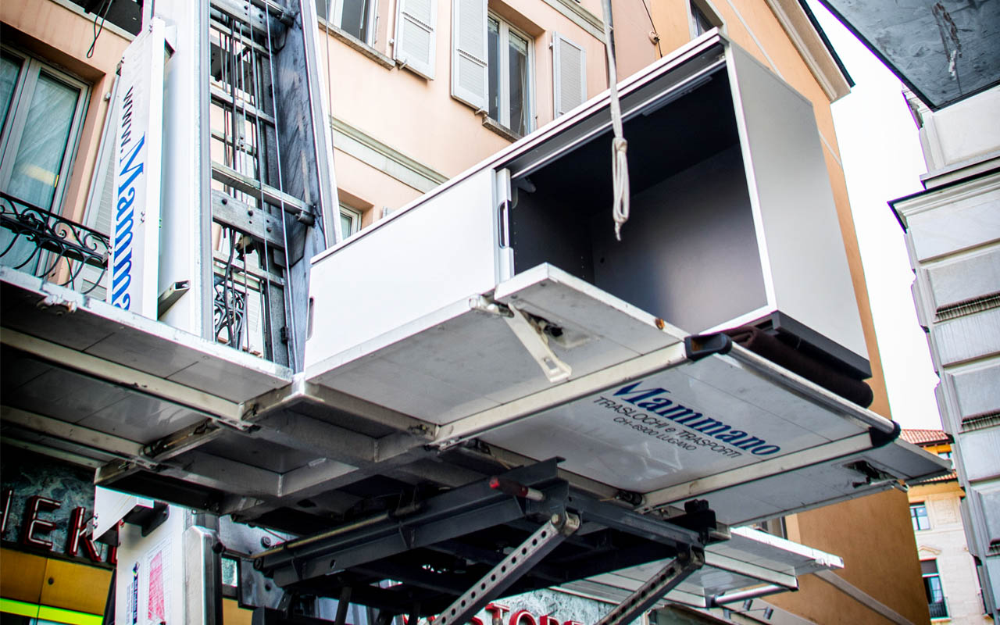

Traslochi privati
Case e appartamenti a Lugano, nel resto del Ticino e in Svizzera. Imballaggio, smontaggio e rimontaggio mobili, trasporto e lift esterno per i piani alti.
Scopri il servizioDal trasloco di un monolocale al trasferimento di un ufficio all'estero: seguiamo ogni fase con personale e mezzi propri, da Lugano in tutto il Ticino e oltre.
In breve
Mammano Traslochi e Trasporti (Lugano, dal 1986) offre traslochi privati, aziendali e internazionali, deposito mobili videosorvegliato, sgomberi, materiale da imballaggio, noleggio di lift esterno con operatore e di camion con autista. Sopralluogo e preventivo sono gratuiti.
Case e appartamenti a Lugano, nel resto del Ticino e in Svizzera. Imballaggio, smontaggio e rimontaggio mobili, trasporto e lift esterno per i piani alti.
Scopri il servizio
Uffici, studi, negozi e archivi trasferiti con un piano di lavoro concordato, anche nel weekend o fuori orario.
Scopri il servizio
Dalla Svizzera verso Italia, Europa e resto del mondo e viceversa, via strada, mare o aereo, porta a porta.
Scopri il servizio
Deposito mobili videosorvegliato, sgombero di appartamenti, cantine e solai, scatoloni e materiale da imballaggio.
Scopri il servizioNoleggio
Non vi serve un trasloco completo? Noleggiamo i nostri mezzi con il personale che li guida. Il lift esterno raggiunge 25 metri e porta fino a 400 kg.
| Lift esterno Paus | 25 m, 400 kg, con operatore |
|---|---|
| Camion Nissan Cabstar | Anche con sponda idraulica, con autista |
| Furgoni | Mercedes Sprinter, VW Transporter, Renault Kangoo |
| Rimorchio Humbaur | 24 m³ |
| Motorizzazioni | Euro 4 e 5 con filtro antiparticolato |

Sempre inclusi
Un consulente valuta volumi e accessi e vi consiglia il giusto equilibrio tra qualità e risparmio.
Materiali adatti a ogni oggetto, perché ogni collo arrivi come è partito.
Armadi, letti, cucine componibili e arredi da ufficio.
Solo traslocatori assunti e regolari, con anni di esperienza.
Veicoli e attrezzature controllati ogni settimana dai nostri tecnici.
Puntuali nel giorno concordato, disponibili anche fuori dagli orari standard.
Chiamateci: dopo il sopralluogo vi proponiamo la soluzione più adatta.